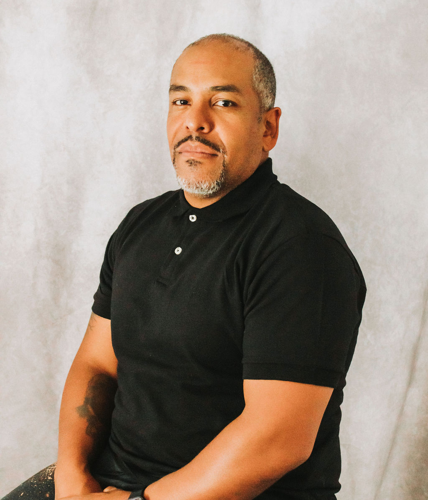

BTR BOARD OF DIRECTORS
Douglas Vargas
Treasurer

Born in Boston and raised in Brockton. A family-oriented individual who believes in the power of support and connection. Passionate about sports and staying active through regular workouts, always striving to improve both physically and mentally.
Dedicated to helping others, whether through advice, motivation, or lending a hand wherever it’s needed. A college graduate with a degree in Accounting & Finance where attention to detail and problem-solving skills are the core attributes to success. Started off as an Accounting Manager but now recently promoted to General Manager for an electrical distribution company.
Hobbies include spending time with family and friends and traveling the world and playing sports.
CONNECT WITH DOUGLAS
dvargas@breakingthroughroadblocks.org